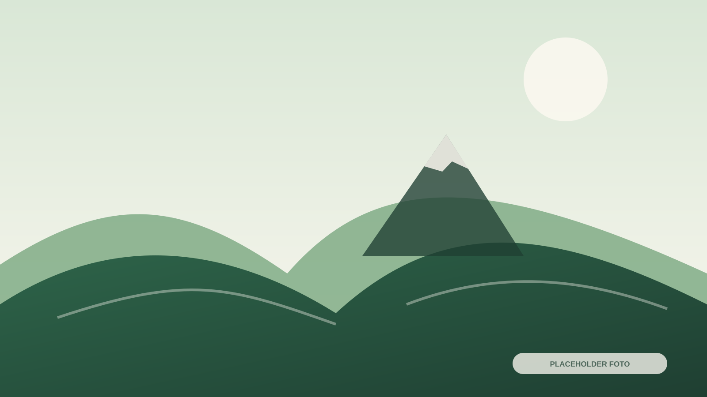
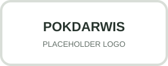

Kontak & Pusat Informasi
Sampaikan kebutuhan Anda dan temukan kontak pengelola layanan berdasarkan kategori.
Satu pintu untuk berbagai kebutuhan
Pusat informasi membantu mengarahkan pertanyaan menuju Basecamp, homestay, transportasi, pemandu, UMKM, Rumah Bibit, kesehatan, atau keamanan.

Setelah nomor pusat informasi tersedia, formulir ini otomatis membuka WhatsApp dengan pesan yang telah disusun.
Hubungi pengelola sesuai kebutuhan
Nomor resmi belum tersedia. Tombol akan aktif otomatis setelah nomor diisi pada assets/js/config.js.
Admin Basecamp Gunung Prau
Kontak resmi belum diisi.
NOMOR BELUM TERSEDIAKoordinator Mobil Banteng Jeep
Kontak resmi belum diisi.
NOMOR BELUM TERSEDIAKoordinator Homestay
Kontak resmi belum diisi.
NOMOR BELUM TERSEDIAKoordinator Pemandu dan Porter
Kontak resmi belum diisi.
NOMOR BELUM TERSEDIATim Dokumentasi Wisata
Kontak resmi belum diisi.
NOMOR BELUM TERSEDIASentra Oleh-oleh dan UMKM
Kontak resmi belum diisi.
NOMOR BELUM TERSEDIAPengelola Agrowisata / Rumah Bibit
Kontak resmi belum diisi.
NOMOR BELUM TERSEDIALayanan Kesehatan
Kontak resmi belum diisi.
NOMOR BELUM TERSEDIALayanan Keamanan Desa
Kontak resmi belum diisi.
NOMOR BELUM TERSEDIADesa Wisata Patakbanteng
Patakbanteng, Kecamatan Kejajar, Kabupaten Wonosobo, Jawa Tengah.
ALAMAT LENGKAP BELUM DIISI
Peta lokasi desa
Embed Google Maps akan tampil di bagian ini setelah tautan resmi tersedia.
Sebelum menghubungi pengelola
Gunakan pusat informasi bila belum mengetahui kategori layanan. Pengelola akan mengarahkan pertanyaan Anda.
Sampaikan tujuan, tanggal, jumlah peserta, layanan yang dibutuhkan, dan pertanyaan secara jelas.
Belum ada harga yang dicantumkan. Konfirmasi harga dan ketersediaan melalui kontak resmi.